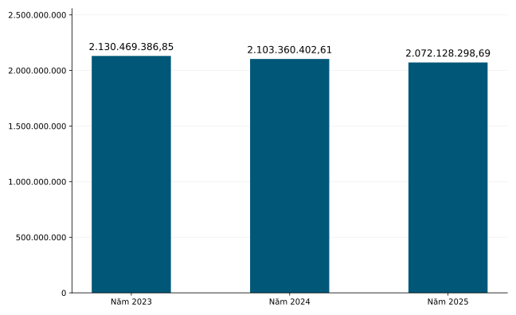
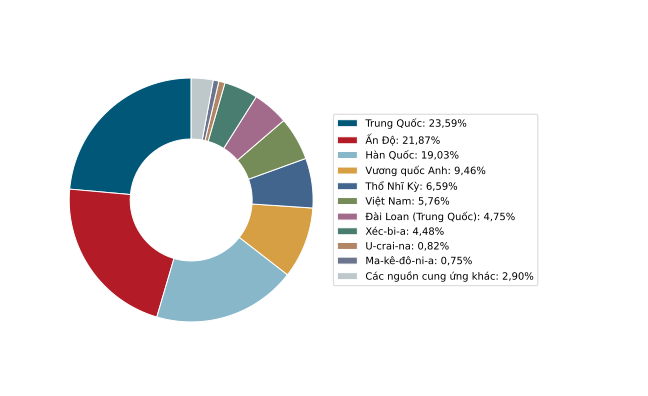
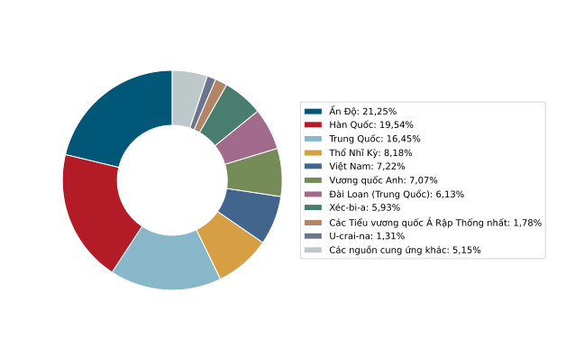
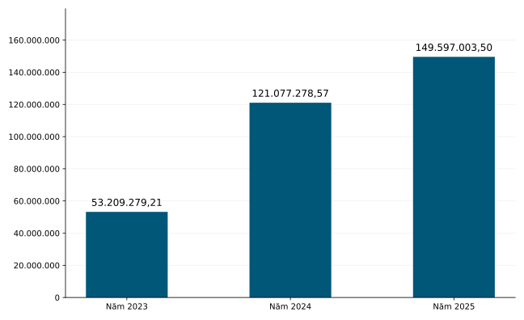
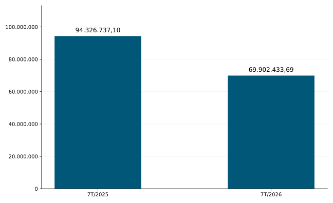

Cục Phòng vệ thương mại tổ chức Diễn đàn Phòng vệ thương mại năm 2026: Thúc đẩy năng lực sản xuất quốc gia – Kiến tạo động lực cho tăng trưởng
Ngày 18 tháng 9 năm 2026, tại Hải Phòng, Cục Phòng vệ thương mại, Bộ Công Thương tổ chức Diễn đàn Phòng vệ thương mại năm 2026 với chủ đề “Thúc đẩy năng lực sản xuất quốc gia – Kiến tạo động lực cho tăng trưởng”. Diễn đàn có sự tham dự của đại diện các cơ quan quản lý nhà nước, hiệp hội ngành hàng, doanh nghiệp sản xuất, xuất khẩu, doanh nghiệp có vốn đầu tư nước ngoài, các đơn vị cung cấp dịch vụ công, luật sư và chuyên gia pháp lý.
Phát biểu khai mạc, Thứ trưởng Bộ Công Thương Nguyễn Sinh Nhật Tân nhấn mạnh phòng vệ thương mại (PVTM) là một trong những công cụ góp phần bảo vệ năng lực sản xuất trong nước, duy trì môi trường cạnh tranh bình đẳng và hỗ trợ tăng trưởng kinh tế. Tính đến tháng 8 năm 2026, Việt Nam đã điều tra, áp dụng PVTM đối với 62 vụ việc, gồm 48 vụ chống bán phá giá, 1 vụ chống trợ cấp, 6 vụ tự vệ và 7 vụ chống lẩn tránh biện pháp PVTM. Các biện pháp đã góp phần bảo vệ doanh thu khoảng 626.000 tỷ đồng của các nhà sản xuất trong nước, duy trì khoảng 67.000 việc làm và tạo nguồn thu thuế PVTM khoảng 2.500 tỷ đồng trong năm 2025.
Tại Diễn đàn, các đại biểu trao đổi về định hướng, giải pháp thúc đẩy tăng trưởng, nâng cao năng lực sản xuất, đổi mới sáng tạo và phát triển bền vững; đồng thời cập nhật xu hướng PVTM trên thế giới và yêu cầu doanh nghiệp chủ động theo dõi thị trường, chuẩn bị ứng phó khi hàng hóa xuất khẩu của Việt Nam bị điều tra PVTM tại nước ngoài.
Các nội dung thảo luận tập trung vào vai trò của những ngành công nghiệp nền tảng như năng lượng, cơ khí – chế tạo, luyện kim, hóa chất và vật liệu trong việc củng cố năng lực sản xuất quốc gia. Trong bối cảnh dư thừa công suất, dịch chuyển chuỗi cung ứng và gia tăng các biện pháp bảo vệ thị trường, PVTM được trao đổi như một công cụ hỗ trợ duy trì cạnh tranh bình đẳng, song cần được triển khai đồng bộ với việc nâng cao năng lực doanh nghiệp, phát triển chuỗi cung ứng và tăng cường khả năng tự chủ của nền kinh tế.
Phiên thảo luận “Phòng vệ thương mại – Thúc đẩy năng lực sản xuất quốc gia – Kiến tạo động lực cho tăng trưởng” tạo cơ hội để cơ quan quản lý, chuyên gia và doanh nghiệp trao đổi về những vấn đề thực tiễn trong quá trình sử dụng và ứng phó với các biện pháp PVTM. Bên cạnh đó, phiên chuyên đề “Từ nhận diện thiệt hại đến xây dựng hồ sơ yêu cầu điều tra phòng vệ thương mại” cung cấp hướng dẫn thực tiễn về việc xác định thiệt hại, thu thập số liệu, chứng minh các yếu tố liên quan và chuẩn bị hồ sơ yêu cầu điều tra.
Diễn đàn góp phần tăng cường trao đổi giữa cơ quan quản lý, hiệp hội và cộng đồng doanh nghiệp, qua đó nâng cao nhận thức và năng lực sử dụng công cụ PVTM, hỗ trợ bảo vệ sản xuất trong nước và tạo nền tảng cho tăng trưởng bền vững.
TIN TRONG NƯỚC
Úc khởi xướng rà soát việc tiếp tục áp dụng biện pháp chống bán phá giá đối với thép mạ kẽm từ Ấn Độ, Ma-lai-xi-a và Việt Nam
Ngày 9 tháng 9 năm 2026, Ủy ban Chống bán phá giá Úc (ADC) khởi xướng điều tra rà soát việc tiếp tục áp dụng biện pháp chống bán phá giá (CBPG) đối với thép mạ kẽm nhập khẩu từ Ấn Độ, Ma-lai-xi-a và Việt Nam. Cuộc điều tra được thực hiện trên cơ sở đơn đề nghị của Công ty BlueScope Steel, đại diện ngành sản xuất trong nước Úc.
Úc lần đầu áp dụng biện pháp CBPG đối với sản phẩm thép mạ kẽm từ Ấn Độ, Ma-lai-xi-a và Việt Nam từ ngày 16 tháng 8 năm 2017. Ngày 28 tháng 7 năm 2022, sau khi rà soát, ADC quyết định gia hạn biện pháp thêm 5 năm, đến ngày 16 tháng 8 năm 2027. Ngày 17 tháng 8 năm 2026, BlueScope Steel tiếp tục đề nghị gia hạn biện pháp với lập luận rằng việc chấm dứt biện pháp có thể dẫn đến gia tăng nhập khẩu từ ba quốc gia, gây sức ép về giá và ảnh hưởng đến ngành sản xuất thép trong nước Úc.
BlueScope Steel cũng cho rằng tình trạng dư thừa công suất thép trên toàn cầu, các biện pháp phòng vệ thương mại tại các thị trường khác và diễn biến thương mại thép quốc tế cho thấy nguy cơ hàng hóa tiếp tục được bán phá giá tại Úc. Trên cơ sở thông tin do BlueScope Steel cung cấp, bao gồm kết quả các cuộc điều tra trước đây, tình hình thị trường, xu hướng thương mại và hoạt động của ngành sản xuất trong nước, ADC nhận định việc chấm dứt biện pháp có khả năng gây thiệt hại đáng kể cho ngành sản xuất Úc.
Thời kỳ điều tra của vụ việc từ ngày 1 tháng 7 năm 2025 đến ngày 30 tháng 6 năm 2026. Các nhà xuất khẩu và bên liên quan có thời hạn đến ngày 16 tháng 10 năm 2026 để nộp bản trả lời bản câu hỏi và ý kiến đối với vụ việc. ADC dự kiến công bố Báo cáo các nội dung trọng yếu (SEF) vào ngày 4 tháng 1 năm 2027; các bên có 20 ngày kể từ ngày công bố để gửi ý kiến bình luận. Ngày 11 tháng 2 năm 2027, Ủy viên ADC dự kiến báo cáo và đưa ra kiến nghị lên Bộ trưởng Bộ Công nghiệp, Khoa học và Tài nguyên Úc. Biện pháp CBPG hiện hành dự kiến hết hiệu lực vào ngày 16 tháng 8 năm 2027 nếu không được tiếp tục gia hạn.
Để bảo vệ quyền và lợi ích hợp pháp của doanh nghiệp, Cục Phòng vệ thương mại khuyến nghị các hiệp hội và doanh nghiệp sản xuất, xuất khẩu liên quan chủ động nghiên cứu bản câu hỏi của ADC, chuẩn bị và nộp đầy đủ thông tin trong thời hạn quy định, đồng thời tham gia các giai đoạn của vụ việc và xây dựng lập luận về sự cần thiết của việc tiếp tục áp dụng biện pháp. Các doanh nghiệp cũng cần phối hợp với Cục Phòng vệ thương mại để cập nhật tình hình xử lý vụ việc, kịp thời trao đổi về các khó khăn, vướng mắc trong quá trình trả lời câu hỏi, cung cấp thông tin bổ sung, bình luận và xác minh của ADC.
TIN TRONG NƯỚC
Bra-xin ban hành quyết định cuối cùng trong vụ việc điều tra chống bán phá giá đối với nhựa PET nhập khẩu từ Việt Nam và Ma-lai-xi-a
Ngày 23 tháng 9 năm 2026, Cục Phòng vệ thương mại (PVTM) – Bộ Công Thương nhận được thông báo của Bộ Phát triển, Công nghiệp, Thương mại và Dịch vụ Bra-xin (MDIC) về kết quả cuối cùng của vụ việc điều tra chống bán phá giá (CBPG) đối với sản phẩm nhựa PET có xuất xứ từ Việt Nam và Ma-lai-xi-a.
Vụ việc được khởi xướng trên cơ sở hồ sơ yêu cầu của Công ty Indorama Ventures Polímeros S.A. và Công ty Alpek Polyester Pernambuco ngày 31 tháng 10 năm 2024. Sản phẩm bị điều tra là nhựa PET (resina PET) có độ nhớt nội tại từ 0,78 dl/g đến 0,88 dl/g, thuộc mã NCM 3907.61.00, có xuất xứ từ Việt Nam và Ma-lai-xi-a. Thời kỳ điều tra bán phá giá từ tháng 7 năm 2023 đến tháng 6 năm 2024.
Ngày 2 tháng 9 năm 2026, Ủy ban Điều hành (GECEX) thuộc Phòng Ngoại thương Bra-xin (CAMEX) ban hành Nghị quyết số 958 về việc kết thúc điều tra và áp dụng thuế CBPG chính thức đối với sản phẩm bị điều tra trong thời hạn tối đa 5 năm. Nghị quyết có hiệu lực kể từ ngày được công bố trên Công báo Bra-xin (DOU), ngày 4 tháng 9 năm 2026.
Thuế CBPG được áp dụng dưới hình thức mức thuế tuyệt đối tính theo USD/tấn. Đối với hàng hóa có xuất xứ từ Việt Nam, mức thuế CBPG là 160,87 USD/tấn, áp dụng đối với các doanh nghiệp xuất khẩu Việt Nam. Đối với Ma-lai-xi-a, mức thuế là 24,28 USD/tấn đối với một doanh nghiệp và 116,50 USD/tấn đối với các doanh nghiệp khác.
Để bảo vệ quyền và lợi ích hợp pháp của doanh nghiệp, Cục Phòng vệ thương mại khuyến nghị các hiệp hội, doanh nghiệp sản xuất, xuất khẩu sản phẩm liên quan nghiên cứu kỹ Nghị quyết số 958 để xác định chính xác mức thuế áp dụng đối với doanh nghiệp; đồng thời rà soát kế hoạch xuất khẩu, chính sách giá và điều kiện giao hàng với đối tác nhập khẩu tại Bra-xin trên cơ sở đánh giá tác động của thuế CBPG đến chi phí, biên lợi nhuận và khả năng cạnh tranh. Doanh nghiệp có thể nghiên cứu, cân nhắc khả năng đề nghị rà soát hành chính mức thuế CBPG theo quy định.
Bên cạnh đó, các doanh nghiệp cần tuân thủ nghiêm các quy định về xuất xứ hàng hóa, không tham gia các hành vi gian lận xuất xứ hoặc lẩn tránh thuế CBPG; chủ động đa dạng hóa thị trường xuất khẩu nhằm giảm thiểu rủi ro từ các biện pháp phòng vệ thương mại. Trong quá trình thực hiện, doanh nghiệp và các hiệp hội cần thường xuyên phối hợp, trao đổi thông tin với Cục Phòng vệ thương mại để được cập nhật tình hình và hỗ trợ kịp thời.
TIN NƯỚC NGOÀI
Liên minh Kinh tế Á - Âu (EAEU) khởi xướng điều tra tự vệ đối với một số sản phẩm thép phẳng phủ polymer
Ngày 9 tháng 9 năm 2026, Liên bang Nga thông báo cho Ủy ban Tự vệ của Tổ chức Thương mại Thế giới (WTO) về việc khởi xướng điều tra tự vệ đối với một số sản phẩm thép phẳng phủ polymer nhập khẩu vào lãnh thổ hải quan của Liên minh Kinh tế Á - Âu (EAEU) gồm 5 thành viên là Nga, Bê-la-rút, Ca-dắc-xtan, Ác-mê-ni-a và Cư-rơ-gư-dơ-xtan. Cuộc điều tra được khởi xướng từ ngày 7 tháng 9 năm 2026.
Theo thông báo, cơ quan điều tra là Cục Bảo vệ thị trường nội địa (Department for Internal Market Defence – DIMD) thuộc Ủy ban Kinh tế Á - Âu. Các bên quan tâm có thể liên hệ với cơ quan này để được cung cấp thông tin về các thủ tục áp dụng trong quá trình điều tra.
Theo Nghị định về việc áp dụng các biện pháp tự vệ, chống bán phá giá và chống trợ cấp đối với các nước thứ ba (Phụ lục số 8 của Hiệp ước thành lập Liên minh Kinh tế Á - Âu ngày 29 tháng 5 năm 2014), các bên quan tâm có thể đăng ký tư cách tham gia điều tra trong thời hạn không quá 25 ngày kể từ ngày khởi xướng điều tra. Các bên tham gia có quyền tiếp cận hồ sơ không mật và tham gia các phiên điều trần công khai.
Các bên tham gia điều tra có thể đề nghị tổ chức phiên điều trần công khai trong thời hạn 45 ngày kể từ ngày khởi xướng điều tra. Các bên quan tâm phải gửi ý kiến bằng văn bản bằng tiếng Nga trong thời hạn 60 ngày kể từ ngày khởi xướng điều tra.
Thông tin chi tiết về vụ việc được đăng tải trên trang thông tin điện tử Cục Bảo vệ thị trường nội địa, Ủy ban Kinh tế Á - Âu tại mục điều tra vụ việc tự vệ mã số SG-15.
Tổng hợp từ wto.org
TIN NƯỚC NGOÀI
Úc áp dụng chính thức thuế chống bán phá giá, chống trợ cấp đối với sản phẩm thanh và thanh ray thép từ Trung Quốc
Úc đã chính thức áp dụng các biện pháp chống bán phá giá (CBPG) và chống trợ cấp (CTC) đối với sản phẩm thanh và thanh ray thép nhẹ định hình (LGST) nhập khẩu từ Trung Quốc, theo hai thông báo được Ủy ban Chống bán phá giá Úc công bố ngày 15 tháng 9 năm 2026.
Theo đó, mức thuế CBPG chính thức được áp dụng ở mức 37,8% đối với Công ty TNHH Vật liệu xây dựng Wenan Kaize và 33,3% đối với tất cả các nhà xuất khẩu khác của Trung Quốc.
Trong khi đó, mức thuế CTC chính thức 4,5% được áp dụng đối với tất cả các nhà xuất khẩu Trung Quốc, ngoại trừ Wenan Kaize. Ngày 17 tháng 8, Ủy ban đã chấm dứt điều tra trợ cấp đối với Wenan Kaize sau khi xác định mức trợ cấp của doanh nghiệp này ở mức không đáng kể (de minimis), theo thông tin của Mysteel Global.
Sản phẩm thuộc phạm vi áp dụng biện pháp là thanh và thanh ray thép nhẹ định hình được phủ kim loại, có hoặc không có hợp kim, có kích thước tiết diện không quá 170 mm về chiều rộng và 170 mm về chiều cao, với độ dày kim loại cơ bản không quá 0,69 mm. Các sản phẩm thép định hình cỡ trung và cỡ lớn, thanh giằng (noggings) và các bộ phận thanh ray mềm (flexible track components) không thuộc phạm vi sản phẩm bị áp dụng biện pháp.
Các sản phẩm thuộc phạm vi điều tra được phân loại theo các mã HS của Úc gồm: 7216.61.00.57, 7216.69.00.58, 7308.90.00.52, 7308.90.00.53, 7308.90.00.55 và 7308.90.00.56
Cuộc điều tra CBPG và CTC được khởi xướng ngày 30 tháng 6 năm 2025 trên cơ sở đơn đề nghị của Công ty Rondo Building Services Pty Ltd của Úc. Giai đoạn điều tra bán phá giá và trợ cấp được xác định từ ngày 1 tháng 4 năm 2024 đến ngày 31 tháng 3 năm 2025, trong khi giai đoạn điều tra thiệt hại bắt đầu từ ngày 1 tháng 4 năm 2021.
Ngày 25 tháng 5, Ủy ban đã áp dụng thuế CBPG tạm thời dưới hình thức yêu cầu đặt cọc bảo đảm, có hiệu lực từ ngày tiếp theo. Khi đó, mức thuế tạm thời được xác định là 37,8% đối với tất cả các nhà xuất khẩu Trung Quốc, bao gồm cả Wenan Kaize.
Tổng hợp từ My Steel
TIN NƯỚC NGOÀI
Ủy ban Thương mại Hàn Quốc đề xuất gia hạn 5 năm biện pháp chống bán phá giá đối với thép hình chữ H của Trung Quốc
Ủy ban Thương mại thuộc Bộ Thương mại, Công nghiệp và Năng lượng Hàn Quốc đã đề xuất Chính phủ tiếp tục áp dụng biện pháp chống bán phá giá đối với sản phẩm thép hình chữ H của Trung Quốc thêm 5 năm. Đồng thời, Ủy ban xác định mức thuế chống bán phá giá tạm thời từ 25,08% đến 27,96% đối với sản phẩm thép thanh dùng trong sản xuất linh kiện ô tô và đóng tàu nhập khẩu từ Trung Quốc.
Tại phiên họp lần thứ 477 ngày 17 tháng 9, Ủy ban Thương mại đã xem xét và biểu quyết về kết luận cuối cùng của vụ việc điều tra chống bán phá giá đối với sản phẩm thép hình chữ H của Trung Quốc và kết luận sơ bộ đối với sản phẩm thép thanh.
Thép hình chữ H là sản phẩm thép kết cấu có mặt cắt hình chữ H, được sử dụng trong xây dựng nhà cửa, nhà máy, tàu biển và các công trình kỹ thuật dân dụng. Đây là lần thứ hai Hàn Quốc tiến hành rà soát cuối kỳ để đánh giá việc chấm dứt hay tiếp tục áp dụng biện pháp chống bán phá giá hiện hành. Công ty Hyundai Steel và Dongkuk Steel đã đề nghị tiến hành rà soát vào tháng 9 năm 2022 và cuộc điều tra được khởi xướng vào tháng 12 cùng năm.
Ủy ban Thương mại kết luận rằng việc chấm dứt các biện pháp hiện hành có thể dẫn đến việc tái diễn hành vi bán phá giá và gây thiệt hại cho ngành sản xuất trong nước. Do đó, Ủy ban dự kiến đề xuất Bộ trưởng Kinh tế và Tài chính áp dụng cam kết về giá đối với hai doanh nghiệp Laiwu Steel và Rizhao Steel, đồng thời gia hạn áp dụng mức thuế chống bán phá giá từ 28,23% đến 32,72% đối với các nhà cung cấp khác trong thời gian 5 năm tiếp theo.
Đối với sản phẩm thép thanh của Trung Quốc, Ủy ban bước đầu xác định ngành sản xuất trong nước đã chịu thiệt hại đáng kể do hành vi bán phá giá. Thép thanh được sử dụng để sản xuất linh kiện ô tô, máy móc xây dựng, đóng tàu, vòng bi và máy móc công nghiệp. Công ty SeAH Besteel và SeAH Changwon Special Steel đã nộp đơn đề nghị điều tra vào tháng 2 năm 2023 và cuộc điều tra được khởi xướng vào tháng 5 năm 2025. Nhằm ngăn ngừa thiệt hại tiếp diễn trong thời gian điều tra, Ủy ban dự kiến đề xuất Bộ trưởng Kinh tế và Tài chính áp dụng mức thuế chống bán phá giá tạm thời từ 25,08% đến 27,96%.
Tại phiên họp, Ủy ban cũng thông báo việc khởi xướng điều tra chống bán phá giá đối với màng polyethylene terephthalate (PET) có xuất xứ từ Đài Loan, Thái Lan và Các Tiểu vương quốc Ả Rập Thống nhất, cũng như ethyl acetate và sợi kéo căng hoàn toàn (FDY) có xuất xứ từ Trung Quốc. Màng PET được sử dụng trong bao bì và các vật liệu điện tử, quang học; ethyl acetate được sử dụng làm dung môi trong sản xuất sơn và mực in; FDY được sử dụng trong sản xuất hàng dệt may và vải phục vụ cả mục đích may mặc và các mục đích khác.
Ủy ban Thương mại dự kiến đưa ra kết luận cuối cùng đối với các vụ việc này trong nửa đầu năm tới, sau khi tiến hành điều tra bằng bảng câu hỏi, tổ chức phiên điều trần công khai, điều tra tại chỗ và thu thập ý kiến của các bên liên quan trong nước và quốc tế.
Tổng hợp từ ajupress.com
TIN NƯỚC NGOÀI
Ca-na-đa chấm dứt áp dụng thuế chống bán phá giá đối với tấm pin năng lượng mặt trời nhập khẩu từ Trung Quốc
Ngày 17/9/2026, Tòa án Thương mại Quốc tế Ca-na-đa (CITT) quyết định chấm dứt áp dụng thuế chống bán phá giá và thuế chống trợ cấp đối với một tấm pin năng lượng nhập khẩu từ Trung Quốc. Theo đó, Cơ quan Dịch vụ Biên giới Ca-na-đa (CBSA) sẽ không tiếp tục thu thuế chống bán phá giá và chống trợ cấp đối với các sản phẩm tấm pin năng lượng mặt trời có xuất xứ từ Trung Quốc.
Biện pháp chống bán phá giá và chống trợ cấp được áp dụng lần đầu theo quyết định ngày 25/3/2021. Trước đó, trong khuôn khổ rà soát hoàng hôn RR-2020-001, CITT đã tiếp tục duy trì, không sửa đổi, kết luận được ban hành ngày 3/7/2015 trong vụ việc điều tra NQ-2014-003. Tuy nhiên, kết quả rà soát lần này, CITT quyết định chấm dứt lệnh áp dụng biện pháp do không có đủ sự ủng hộ của ngành sản xuất trong nước để tiếp tục duy trì biện pháp.
Phạm vi sản phẩm thuộc biện pháp bao gồm các tấm pin năng lượng mặt trời sử dụng tế bào quang điện silicon tinh thể; sản phẩm PV màng mỏng được sản xuất từ silicon vô định hình, cadmium telluride (CdTe) hoặc đồng indium gallium selenide (CIGS). Các tấm pin năng lượng có công suất không vượt quá 100W đã được loại trừ khỏi phạm vi áp dụng của biện pháp từ trước.
Theo CITT, ngành sản xuất trong nước không ủng hộ việc tiếp tục rà soát cuối kỳ. Trên cơ sở đó, CITT quyết định chấm dứt lệnh áp dụng biện pháp đối với các sản phẩm thuộc phạm vi vụ việc. Quyết định của CITT được công bố ngày 17/9/2026.
Động thái của Ca-na-đa có sự khác biệt so với chính sách thương mại của Hoa Kỳ đối với sản phẩm tấm pin năng lượng nhập khẩu từ Trung Quốc và một số quốc gia Đông Nam Á. Hoa Kỳ đã áp dụng các biện pháp thương mại đối với tấm pin năng lượng và các sản phẩm khác trong chuỗi cung ứng từ năm 2012. Gần đây, Hoa Kỳ tiếp tục áp dụng mức thuế 15% đối với một số sản phẩm sử dụng polysilicon và thiết lập mức giá tối thiểu đối với polysilicon và các sản phẩm dẫn xuất theo Mục 232 của Đạo luật Mở rộng Thương mại năm 1962.
Tổng hợp từ pv-tech.org
TIN NƯỚC NGOÀI
Ấn Độ khởi xướng điều tra chống bán phá giá đối với sản phẩm glycine nhập khẩu từ Trung Quốc
Ấn Độ đã khởi xướng điều tra chống bán phá giá đối với sản phẩm glycine nhập khẩu có xuất xứ từ Trung Quốc, trên cơ sở xem xét cáo buộc hàng hóa nhập khẩu được bán với giá thấp hơn giá trị thông thường và gây thiệt hại cho ngành sản xuất trong nước.
Cuộc điều tra được tiến hành trên cơ sở đơn yêu cầu của ngành sản xuất glycine trong nước. Trong quá trình điều tra, cơ quan điều tra của Ấn Độ sẽ xem xét các thông tin, dữ liệu và chứng cứ liên quan đến giá xuất khẩu, giá trị thông thường, lượng nhập khẩu, diễn biến giá và tình hình hoạt động của ngành sản xuất trong nước để đánh giá hành vi bán phá giá và thiệt hại được cáo buộc.
Bên cạnh đó, cơ quan điều tra sẽ xem xét mối quan hệ nhân quả giữa hàng hóa nhập khẩu thuộc phạm vi điều tra và thiệt hại được cáo buộc đối với ngành sản xuất trong nước, đồng thời đánh giá các yếu tố khác có thể gây thiệt hại cho ngành sản xuất trong nước nhằm xác định liệu thiệt hại được cáo buộc có phải do hàng hóa nhập khẩu bán phá giá gây ra hay không.
Glycine là một loại axit amin được sử dụng trong nhiều lĩnh vực, trong đó có sản xuất dược phẩm, thực phẩm, thức ăn chăn nuôi và một số ứng dụng công nghiệp. Việc khởi xướng điều tra không đồng nghĩa với việc cơ quan điều tra đã đưa ra kết luận cuối cùng về hành vi bán phá giá hoặc thiệt hại. Trong quá trình điều tra, các bên có quyền lợi liên quan sẽ có cơ hội cung cấp thông tin, chứng cứ và ý kiến để cơ quan điều tra xem xét, đánh giá theo quy định.
Tổng hợp từ thehindu.com
TIN NƯỚC NGOÀI
Ấn Độ đề xuất gia hạn 5 năm thuế chống bán phá giá đối với sản phẩm nhôm lá nhập khẩu
Tổng cục Phòng vệ thương mại Ấn Độ (DGTR) đã đề xuất gia hạn thêm 5 năm biện pháp chống bán phá giá đối với sản phẩm nhôm lá nhập khẩu có xuất xứ từ Trung Quốc, Thái Lan, Ma-lai-xi-a và In-đô-nê-xi-a. Đề xuất này được đưa ra sau khi DGTR hoàn tất rà soát cuối kỳ đối với biện pháp chống bán phá giá đang áp dụng. Quyết định cuối cùng về việc áp dụng biện pháp thuộc thẩm quyền của Bộ Tài chính Ấn Độ.
Theo đề xuất của DGTR, mức thuế chống bán phá giá đối với nhôm lá có độ dày từ 80 micron trở xuống dao động từ 93,53 USD/tấn đến 976,99 USD/tấn, tùy thuộc vào nhà sản xuất, xuất khẩu và xuất xứ hàng hóa.
Cuộc rà soát được khởi xướng trên cơ sở đơn yêu cầu của các doanh nghiệp sản xuất nhôm lá trong nước, gồm Hindalco Industries, LSKB Aluminium Foils, Raviraj Foils, Shree Venkateshwara Electrocast, Shyam Sel and Power Ltd và SRF Altech Ltd.
Theo kết quả rà soát của DGTR, sau khi xem xét ý kiến, thông tin và dữ liệu do các bên có quyền lợi liên quan cung cấp, DGTR cho rằng việc tiếp tục áp dụng biện pháp chống bán phá giá là cần thiết. DGTR nhận định hàng hóa nhập khẩu bị cáo buộc bán phá giá đã ảnh hưởng đến khả năng sinh lợi của ngành sản xuất trong nước. Đồng thời, lượng nhập khẩu vẫn ở mức đáng kể dù các biện pháp chống bán phá giá hiện hành đang được áp dụng, đặc biệt đối với hàng hóa có xuất xứ từ Thái Lan.
Đối với hàng hóa có xuất xứ từ Trung Quốc, DGTR cho rằng các nhà xuất khẩu có định hướng xuất khẩu cao và có khả năng gia tăng lượng hàng xuất khẩu sang Ấn Độ nếu biện pháp chống bán phá giá hiện hành hết hiệu lực. Đây là một trong những yếu tố được DGTR xem xét khi đánh giá khả năng tiếp diễn hoặc tái diễn của hành vi bán phá giá và thiệt hại đối với ngành sản xuất trong nước.
Ấn Độ lần đầu áp dụng thuế chống bán phá giá đối với sản phẩm này vào tháng 9/2021, với thời hạn 5 năm. Đề xuất gia hạn thêm 5 năm được DGTR đưa ra trong khuôn khổ rà soát cuối kỳ nhằm xem xét liệu việc chấm dứt biện pháp có khả năng dẫn đến sự tiếp diễn hoặc tái diễn của hành vi bán phá giá và thiệt hại đối với ngành sản xuất trong nước hay không.
Bên cạnh diễn biến của vụ việc, quan hệ thương mại giữa Ấn Độ và Trung Quốc tiếp tục ghi nhận mức thâm hụt lớn đối với Ấn Độ. Trong năm 2025–2026, kim ngạch xuất khẩu của Ấn Độ sang Trung Quốc tăng 36,66%, đạt 19,47 tỷ USD, trong khi kim ngạch nhập khẩu từ Trung Quốc tăng 16%, đạt 131,63 tỷ USD. Theo đó, thâm hụt thương mại của Ấn Độ với Trung Quốc tăng lên mức kỷ lục 112,6 tỷ USD, so với 99,2 tỷ USD trong năm 2024–2025.
Trong giai đoạn tháng 4/ 2026 đến tháng 8/2026, kim ngạch nhập khẩu của Ấn Độ từ Trung Quốc tăng hơn 27%, đạt 65,49 tỷ USD so với cùng kỳ năm trước. Trong khi đó, kim ngạch xuất khẩu hàng hóa của Ấn Độ sang Trung Quốc tăng 38,71%, từ 6,93 tỷ USD lên 9,61 tỷ USD.
Mặc dù xuất khẩu sang Trung Quốc tăng với tốc độ cao hơn, thâm hụt thương mại của Ấn Độ với Trung Quốc vẫn tăng lên khoảng 56 tỷ USD trong 5 tháng đầu năm 2026.
Tổng hợp từ cnbctv18.com
THÔNG TIN XUẤT NHẬP KHẨU
Cảnh báo đối với mặt hàng thép cán phẳng mạ hoặc tráng thiếc xuất khẩu vào thị trường EU
Mô tả mặt hàng thép cán phẳng mạ hoặc tráng thiếc
Thép cán phẳng mạ hoặc tráng thiếc (Tinplate) là sản phẩm thép dạng phẳng được sản xuất trên cơ sở thép cán phẳng, thường là thép cacbon thấp, có bề mặt được phủ một lớp thiếc nhằm nâng cao khả năng chống ăn mòn, cải thiện tính chất bề mặt và đáp ứng các yêu cầu về gia công, tạo hình và sử dụng trong các ngành công nghiệp. Sản phẩm thường được cung cấp dưới dạng cuộn hoặc tấm, có chiều rộng và độ dày khác nhau tùy thuộc vào mục đích sử dụng và yêu cầu kỹ thuật của khách hàng. Quy trình sản xuất cơ bản thường bao gồm các công đoạn luyện thép, đúc phôi, cán nóng, cán nguội, làm sạch và xử lý bề mặt, sau đó thực hiện công đoạn mạ hoặc tráng thiếc bằng phương pháp điện phân hoặc các công nghệ phù hợp khác. Sau khi được phủ thiếc, sản phẩm có thể tiếp tục trải qua các công đoạn xử lý như nấu chảy lại lớp thiếc, xử lý hóa học bề mặt, phủ dầu bảo vệ, cắt xẻ hoặc cắt thành tấm theo quy cách.
Lớp thiếc phủ trên bề mặt thép có vai trò quan trọng trong việc bảo vệ nền thép khỏi tác động của môi trường, đồng thời tạo ra bề mặt sáng, tương đối ổn định và phù hợp với các yêu cầu về vệ sinh trong một số lĩnh vực sử dụng. Tùy thuộc vào công nghệ sản xuất và mục đích sử dụng, lớp phủ thiếc có thể được kiểm soát về độ dày, khối lượng lớp phủ, độ đồng đều và tính chất bám dính. Nền thép thường được lựa chọn với thành phần hóa học và tính chất cơ học phù hợp để đáp ứng các yêu cầu về độ bền, khả năng kéo, uốn, dập sâu và tạo hình. Các chỉ tiêu kỹ thuật thường được xem xét đối với sản phẩm bao gồm mác thép, thành phần hóa học, độ dày, chiều rộng, độ cứng, tính chất cơ học, khối lượng hoặc độ dày lớp thiếc, trạng thái bề mặt, dung sai kích thước và hình thức đóng gói.
Về đặc điểm sản phẩm, thép cán phẳng mạ hoặc tráng thiếc có sự kết hợp giữa đặc tính cơ học của nền thép và khả năng bảo vệ bề mặt của lớp thiếc. Sản phẩm có khả năng chống ăn mòn tốt hơn so với thép chưa được phủ, đồng thời có khả năng gia công, tạo hình và hàn phù hợp với nhiều ứng dụng công nghiệp. Do có khả năng đáp ứng các yêu cầu về độ bền, khả năng gia công và bảo vệ sản phẩm khỏi tác động của môi trường, thép mạ hoặc tráng thiếc được sử dụng phổ biến trong sản xuất bao bì kim loại, lon và hộp đựng thực phẩm, đồ uống, hộp hóa chất, hộp sơn, nắp chai, các loại bao bì và linh kiện kim loại, cũng như một số sản phẩm công nghiệp khác. Đối với lĩnh vực bao bì thực phẩm và đồ uống, yêu cầu đối với sản phẩm thường cao hơn về chất lượng bề mặt, độ sạch, khả năng chống ăn mòn và tính an toàn khi tiếp xúc với sản phẩm bên trong.
Xét về phân loại thương mại, thép cán phẳng mạ hoặc tráng thiếc có thể được phân biệt theo phương pháp sản xuất, loại nền thép, trạng thái xử lý bề mặt, độ dày và khối lượng lớp thiếc phủ, dạng sản phẩm (cuộn hoặc tấm), mác thép và mục đích sử dụng. Sản phẩm có thể được cung cấp với các mức độ phủ thiếc khác nhau ở một hoặc cả hai mặt tùy theo yêu cầu kỹ thuật. Trong hoạt động xuất nhập khẩu, việc xác định chính xác phạm vi sản phẩm cần căn cứ đồng thời vào mô tả hàng hóa, đặc tính kỹ thuật, phương pháp sản xuất và mã số HS tương ứng; không nên chỉ dựa vào tên thương mại của sản phẩm. Đối với công tác theo dõi phòng vệ thương mại, việc xác định rõ phạm vi sản phẩm đặc biệt quan trọng, bởi các cơ quan điều tra có thể quy định phạm vi hàng hóa điều tra dựa trên nhiều tiêu chí như loại thép nền, độ dày, chiều rộng, hình thức sản phẩm, phương pháp mạ hoặc tráng, mục đích sử dụng và các đặc tính kỹ thuật khác.
Nhìn chung, thép cán phẳng mạ hoặc tráng thiếc là sản phẩm thép công nghiệp có giá trị gia tăng cao hơn so với thép cán phẳng chưa phủ, với đặc tính nổi bật là nền thép có độ bền và khả năng gia công phù hợp được kết hợp với lớp thiếc bảo vệ trên bề mặt. Sản phẩm giữ vai trò quan trọng trong chuỗi cung ứng của ngành bao bì kim loại và một số ngành công nghiệp chế biến, đặc biệt tại các thị trường có nhu cầu lớn về thực phẩm đóng hộp, đồ uống và các sản phẩm tiêu dùng sử dụng bao bì kim loại. Vì vậy, khi đánh giá tình hình sản xuất, thương mại và nguy cơ áp dụng các biện pháp phòng vệ thương mại đối với mặt hàng này, cần xem xét đồng thời các yếu tố về quy mô và năng lực sản xuất, công suất, giá nguyên liệu đầu vào, giá bán, nhu cầu thị trường, tình hình xuất nhập khẩu, cơ cấu thị trường, sự biến động về khối lượng và giá trị xuất khẩu, cũng như đặc điểm cạnh tranh giữa các nguồn cung.
Quy trình sản xuất thép cán phẳng mạ hoặc tráng thiếc
Quy trình sản xuất thép cán phẳng mạ hoặc tráng thiếc là một quy trình công nghiệp gồm nhiều công đoạn liên tiếp, trong đó nền thép được xử lý để đạt các yêu cầu về thành phần hóa học, cơ tính, kích thước và chất lượng bề mặt trước khi phủ một lớp thiếc lên một hoặc cả hai mặt. Tùy thuộc vào công nghệ và dây chuyền của từng nhà sản xuất, quy trình có thể có sự khác biệt nhất định về thiết bị, thông số kỹ thuật và phương pháp xử lý bề mặt. Tuy nhiên, về cơ bản, quá trình sản xuất có thể được khái quát qua các công đoạn chính gồm luyện thép và đúc phôi, cán nóng, tẩy gỉ, cán nguội, ủ và điều chỉnh cơ tính, chuẩn bị bề mặt, mạ hoặc tráng thiếc, xử lý sau mạ, kiểm tra chất lượng và hoàn thiện sản phẩm.
Thứ nhất, luyện thép và đúc phôi. Nguyên liệu đầu vào chủ yếu gồm sắt, thép phế hoặc các nguyên liệu chứa sắt kết hợp với các nguyên tố hợp kim cần thiết. Trong quá trình luyện, nguyên liệu được nung chảy trong lò luyện phù hợp, sau đó được điều chỉnh thành phần hóa học nhằm tạo ra loại thép có hàm lượng cacbon thấp và các đặc tính phù hợp với yêu cầu của thép cán phẳng mạ hoặc tráng thiếc. Thành phần hóa học của thép nền có ảnh hưởng trực tiếp đến độ bền, độ dẻo, khả năng cán, khả năng dập và tạo hình của sản phẩm cuối cùng. Sau khi đạt yêu cầu, thép lỏng được đưa sang công đoạn đúc liên tục để tạo thành phôi thép có kích thước và hình dạng phù hợp với quá trình cán tiếp theo. Phôi sau đúc thường được kiểm tra và xử lý bề mặt nếu cần thiết trước khi đưa vào dây chuyền cán nóng.
Thứ hai, cán nóng. Phôi thép được gia nhiệt đến nhiệt độ thích hợp để tăng tính dẻo và sau đó được đưa qua các giá cán để giảm chiều dày, đồng thời tăng chiều dài và tạo hình dạng sản phẩm theo yêu cầu. Trong quá trình cán nóng, các thông số như nhiệt độ, tốc độ cán, lực cán và mức độ giảm chiều dày được kiểm soát chặt chẽ nhằm bảo đảm chất lượng của thép nền. Sau khi cán, thép được làm nguội theo chế độ phù hợp và cuộn lại thành cuộn thép cán nóng. Công đoạn cán nóng không chỉ quyết định một phần về kích thước của nền thép mà còn ảnh hưởng đến tổ chức kim loại và các tính chất cơ học của sản phẩm ở các công đoạn tiếp theo.
Thứ ba, tẩy gỉ và làm sạch bề mặt. Sau quá trình cán nóng, trên bề mặt thép thường hình thành một lớp oxit hoặc vảy cán do thép tiếp xúc với nhiệt độ cao và môi trường oxy hóa. Lớp oxit này cần được loại bỏ trước khi thực hiện cán nguội và đặc biệt trước công đoạn mạ hoặc tráng thiếc. Thép có thể được xử lý bằng phương pháp tẩy axit hoặc các phương pháp làm sạch bề mặt thích hợp để loại bỏ gỉ, oxit và các tạp chất. Sau khi tẩy, bề mặt thép được rửa sạch và kiểm soát nhằm bảo đảm không còn các chất gây ảnh hưởng đến quá trình cán hoặc khả năng bám dính của lớp thiếc.
Thứ tư, cán nguội. Sau khi được làm sạch, thép cán nóng tiếp tục được đưa qua dây chuyền cán nguội để giảm chiều dày xuống mức yêu cầu, đồng thời cải thiện độ chính xác về kích thước và chất lượng bề mặt. Cán nguội được thực hiện ở nhiệt độ tương đối thấp và có thể qua nhiều giá cán liên tiếp. Đây là công đoạn quan trọng đối với thép dùng làm nền cho sản phẩm mạ hoặc tráng thiếc vì độ dày, độ phẳng và chất lượng bề mặt của nền thép có ảnh hưởng trực tiếp đến chất lượng lớp phủ và khả năng gia công của sản phẩm cuối cùng. Sau cán nguội, thép thường có độ cứng cao hơn và độ dẻo giảm do hiện tượng biến cứng, vì vậy cần thực hiện công đoạn ủ để điều chỉnh lại cơ tính.
Thứ năm, ủ và điều chỉnh cơ tính. Thép cán nguội được đưa qua quá trình ủ với chế độ nhiệt được kiểm soát nhằm khôi phục và điều chỉnh cấu trúc kim loại, giảm ứng suất bên trong và đưa các tính chất cơ học về mức phù hợp với mục đích sử dụng. Tùy theo yêu cầu đối với sản phẩm, thép có thể được ủ theo dạng ủ liên tục hoặc ủ theo mẻ. Sau quá trình ủ, thép có độ dẻo và khả năng tạo hình được cải thiện. Tiếp đó, thép có thể trải qua công đoạn cán tinh hoặc cán điều chỉnh nhẹ để kiểm soát độ phẳng, độ cứng, độ nhám bề mặt và các đặc tính cơ học cuối cùng của nền thép trước khi đưa sang dây chuyền mạ thiếc.
Thứ sáu, chuẩn bị bề mặt trước khi mạ hoặc tráng thiếc. Đây là công đoạn có ý nghĩa đặc biệt quan trọng bởi lớp thiếc cần bám chắc, đồng đều và ổn định trên bề mặt thép. Nền thép được làm sạch kỹ để loại bỏ dầu, bụi, oxit và các tạp chất còn lại từ các công đoạn trước. Tùy công nghệ, bề mặt có thể được tẩy dầu, tẩy axit, rửa bằng nước và thực hiện các bước hoạt hóa bề mặt. Mục đích của quá trình này là tạo ra bề mặt sạch, đồng nhất, giúp quá trình phủ thiếc diễn ra ổn định và hạn chế các khuyết tật như lớp phủ không đều, bong tróc hoặc thiếu lớp phủ.
Thứ bảy, mạ hoặc tráng thiếc. Sau khi bề mặt được chuẩn bị, thép được đưa vào công đoạn phủ thiếc. Đối với công nghệ phổ biến hiện nay, thiếc thường được phủ bằng phương pháp mạ điện phân, trong đó dải thép liên tục đi qua bể dung dịch điện phân chứa ion thiếc và được kiểm soát về dòng điện, tốc độ dây chuyền, nhiệt độ, thành phần dung dịch và các thông số liên quan. Thiếc được kết tủa lên bề mặt thép tạo thành một lớp phủ có độ dày hoặc khối lượng theo yêu cầu. Việc kiểm soát lượng thiếc phủ ở từng mặt là rất quan trọng vì nó ảnh hưởng đến khả năng chống ăn mòn, chất lượng bề mặt và chi phí sản xuất. Trong một số quy trình, sản phẩm sau khi phủ thiếc có thể được xử lý nhiệt nhanh nhằm làm nóng chảy hoặc làm phẳng lớp thiếc trên bề mặt, qua đó cải thiện độ sáng, độ đồng đều và tính chất của lớp phủ.
Thứ tám, xử lý hóa học và phủ dầu bảo vệ. Sau khi mạ thiếc, bề mặt sản phẩm có thể được xử lý bằng các phương pháp thích hợp nhằm ổn định lớp phủ, hạn chế hiện tượng oxy hóa hoặc biến đổi bề mặt trong quá trình bảo quản và sử dụng. Một lớp dầu bảo vệ rất mỏng có thể được phủ lên bề mặt để giảm nguy cơ ăn mòn, trầy xước và giúp sản phẩm thuận lợi hơn trong quá trình gia công tiếp theo. Đối với thép dùng để sản xuất bao bì thực phẩm và đồ uống, việc xử lý bề mặt phải đáp ứng các yêu cầu kỹ thuật và tiêu chuẩn liên quan đến mục đích sử dụng của sản phẩm.
Thứ chín, kiểm tra và hoàn thiện sản phẩm. Sau khi hoàn thành công đoạn mạ hoặc tráng thiếc, sản phẩm được kiểm tra toàn diện về chất lượng. Các chỉ tiêu có thể bao gồm độ dày và độ đồng đều của lớp thiếc, độ dày nền thép, chiều rộng, độ phẳng, độ cứng, tính chất cơ học, chất lượng bề mặt, khả năng bám dính của lớp phủ và các yêu cầu kỹ thuật khác. Các thiết bị kiểm tra tự động có thể được sử dụng để phát hiện các khuyết tật trên bề mặt trong quá trình dây chuyền vận hành. Những sản phẩm không đáp ứng tiêu chuẩn có thể được phân loại, xử lý hoặc loại bỏ tùy theo mức độ sai lệch.
Cuối cùng, cắt, xẻ, đóng gói và lưu kho. Sau khi đạt yêu cầu chất lượng, thép mạ hoặc tráng thiếc được đưa qua công đoạn hoàn thiện theo đơn hàng. Sản phẩm có thể được giữ ở dạng cuộn lớn, xẻ thành các cuộn có chiều rộng nhỏ hơn hoặc cắt thành tấm với kích thước xác định. Các cuộn hoặc tấm thành phẩm được đóng gói bằng vật liệu bảo vệ thích hợp để hạn chế tác động của độ ẩm, va đập và các yếu tố môi trường trong quá trình vận chuyển và lưu kho. Việc bảo quản cần được thực hiện trong điều kiện phù hợp nhằm hạn chế nguy cơ xuất hiện hiện tượng oxy hóa hoặc ảnh hưởng đến chất lượng bề mặt.
Nhìn chung, quy trình sản xuất thép cán phẳng mạ hoặc tráng thiếc là quá trình liên tục, đòi hỏi kiểm soát chặt chẽ cả nền thép và lớp phủ thiếc. Chất lượng sản phẩm cuối cùng phụ thuộc vào nhiều yếu tố, từ thành phần hóa học của thép, điều kiện luyện và đúc phôi, chế độ cán nóng và cán nguội, quá trình ủ, chất lượng làm sạch bề mặt cho đến các thông số của công đoạn mạ thiếc và xử lý sau mạ. Trong đó, chất lượng bề mặt của nền thép, độ chính xác về kích thước và độ đồng đều của lớp thiếc là những yếu tố đặc biệt quan trọng. Do sản phẩm được sử dụng rộng rãi trong sản xuất bao bì thực phẩm, đồ uống và các sản phẩm công nghiệp, việc kiểm soát quy trình sản xuất không chỉ nhằm bảo đảm tính chất cơ học và khả năng chống ăn mòn mà còn phải đáp ứng các yêu cầu ngày càng cao về chất lượng, độ ổn định và an toàn của sản phẩm.
Thị trường thép cán phẳng mạ hoặc tráng thiếc của EU và xu hướng
Thị trường thép cán phẳng mạ hoặc tráng thiếc tại Liên minh châu Âu (EU) có vai trò quan trọng trong chuỗi cung ứng thép dẹt và ngành sản xuất bao bì kim loại, đặc biệt là bao bì phục vụ thực phẩm, đồ uống, hóa chất và hàng tiêu dùng. Nhu cầu đối với mặt hàng này có mối liên hệ tương đối chặt chẽ với hoạt động của các ngành công nghiệp sử dụng thép tráng thiếc làm nguyên liệu đầu vào, trong đó nổi bật là sản xuất lon, hộp thực phẩm, hộp đồ uống, nắp và các loại bao bì kim loại. Trong những năm gần đây, thị trường thép của EU nói chung chịu ảnh hưởng bởi tốc độ tăng trưởng kinh tế chưa đồng đều, chi phí năng lượng và nguyên liệu đầu vào ở mức cao, biến động nhu cầu của ngành công nghiệp chế biến, cạnh tranh từ hàng nhập khẩu và quá trình chuyển đổi sang sản xuất thép phát thải thấp. Những yếu tố này đồng thời tác động đến cung – cầu, giá cả và hoạt động thương mại đối với thép cán phẳng mạ hoặc tráng thiếc.
Về phía cầu, nhu cầu thép cán phẳng mạ hoặc tráng thiếc tại EU chủ yếu được thúc đẩy bởi ngành thực phẩm và đồ uống đóng hộp, bởi sản phẩm có đặc tính phù hợp với việc sản xuất bao bì kim loại nhờ khả năng tạo hình, độ bền cơ học và khả năng bảo vệ nền thép trước tác động của môi trường. Thị trường thực phẩm chế biến, đồ uống, thực phẩm đóng hộp và các sản phẩm tiêu dùng có bao bì kim loại tiếp tục tạo ra nhu cầu tương đối ổn định đối với thép tráng thiếc. Bên cạnh đó, xu hướng gia tăng yêu cầu về khả năng tái chế bao bì và thúc đẩy nền kinh tế tuần hoàn tại EU cũng tạo điều kiện để các vật liệu kim loại, trong đó có thép, tiếp tục được sử dụng trong lĩnh vực bao bì. Tuy nhiên, nhu cầu thực tế có thể biến động theo tình hình sản xuất công nghiệp, tiêu dùng, giá năng lượng, giá nguyên liệu và khả năng cạnh tranh của các loại vật liệu bao bì thay thế.
Về nguồn cung, ngành thép EU có hệ thống sản xuất tương đối phát triển nhưng đồng thời phải đối mặt với áp lực cạnh tranh ngày càng lớn từ các nhà sản xuất ngoài EU. Đối với thép cán phẳng mạ hoặc tráng thiếc, nguồn cung cho thị trường EU bao gồm cả sản xuất nội khối và nhập khẩu từ các nước thứ ba. Sự chênh lệch về chi phí sản xuất, giá năng lượng, nguyên liệu, công nghệ và quy mô sản xuất giữa các khu vực có thể làm thay đổi tương quan cạnh tranh trên thị trường. Trong bối cảnh nhu cầu thép tại EU có thời điểm suy giảm trong khi năng lực sản xuất vẫn ở mức đáng kể, vấn đề cạnh tranh giữa sản phẩm sản xuất trong EU và hàng nhập khẩu có xu hướng trở thành một nội dung được các nhà sản xuất châu Âu quan tâm. Điều này có thể làm gia tăng khả năng ngành sản xuất EU đề nghị cơ quan chức năng xem xét các công cụ thương mại khi cho rằng hàng nhập khẩu gây ảnh hưởng bất lợi đến sản xuất trong nước.
Một xu hướng đáng chú ý của thị trường EU là tăng cường các yêu cầu về môi trường và giảm phát thải carbon trong ngành thép. EU đang thúc đẩy quá trình chuyển đổi sang sản xuất thép xanh, sử dụng công nghệ ít phát thải hơn và tăng cường yêu cầu về minh bạch nguồn gốc, dấu chân carbon và tác động môi trường của sản phẩm. Đối với thép cán phẳng mạ hoặc tráng thiếc, xu hướng này có thể làm gia tăng yêu cầu đối với nhà sản xuất và nhà xuất khẩu về dữ liệu liên quan đến nguyên liệu đầu vào, quy trình sản xuất, mức tiêu thụ năng lượng và phát thải khí nhà kính. Về dài hạn, các yếu tố môi trường có thể trở thành một trong những tiêu chí quan trọng ảnh hưởng đến khả năng tiếp cận thị trường EU, bên cạnh các tiêu chí truyền thống về giá, chất lượng và điều kiện thương mại.
Bên cạnh đó, xu hướng đa dạng hóa nguồn cung cũng có ý nghĩa quan trọng đối với thị trường thép EU. Các doanh nghiệp sử dụng thép tráng thiếc có xu hướng quan tâm đến khả năng bảo đảm nguồn cung ổn định, chất lượng đồng nhất và thời gian giao hàng. Trong bối cảnh thương mại quốc tế có nhiều biến động, việc phụ thuộc quá lớn vào một số nguồn cung nhất định có thể làm gia tăng rủi ro về logistics, giá cả và khả năng gián đoạn chuỗi cung ứng. Do đó, các nhà nhập khẩu và người sử dụng thép tại EU có thể tìm kiếm nhiều nguồn cung khác nhau, tạo cơ hội cho các nước có năng lực sản xuất và xuất khẩu phù hợp, nhưng đồng thời cũng làm gia tăng yêu cầu về khả năng đáp ứng tiêu chuẩn kỹ thuật, chất lượng và các quy định của EU.
Một xu hướng khác cần lưu ý là EU tiếp tục sử dụng và điều chỉnh các công cụ chính sách thương mại để bảo vệ ngành sản xuất thép trước những biến động của thị trường quốc tế. Đối với các sản phẩm thép cán phẳng, EU có thể áp dụng hoặc xem xét các biện pháp phòng vệ thương mại tùy thuộc vào từng sản phẩm, nguồn nhập khẩu và kết quả điều tra. Do đó, đối với các nước xuất khẩu, trong đó có Việt Nam, việc theo dõi thường xuyên các thay đổi về chính sách thương mại, các vụ việc điều tra chống bán phá giá, chống trợ cấp, tự vệ và chống lẩn tránh của EU có ý nghĩa quan trọng. Đặc biệt, doanh nghiệp cần theo dõi những biến động bất thường về khối lượng và giá trị xuất khẩu, thị phần, giá xuất khẩu và cơ cấu khách hàng để kịp thời nhận diện nguy cơ phát sinh các vụ việc phòng vệ thương mại.
Đối với Việt Nam, thị trường EU vừa tạo cơ hội mở rộng xuất khẩu thép cán phẳng mạ hoặc tráng thiếc, vừa đặt ra yêu cầu cao về chất lượng, khả năng truy xuất nguồn gốc, tiêu chuẩn môi trường và tuân thủ các quy định thương mại. Doanh nghiệp Việt Nam cần chủ động xây dựng hệ thống dữ liệu về chi phí sản xuất, giá bán, nguyên liệu đầu vào, sản lượng, công suất, xuất khẩu và khách hàng; đồng thời kiểm soát chặt chẽ xuất xứ và quá trình sản xuất để có thể giải trình khi cần thiết. Việc duy trì mức tăng trưởng xuất khẩu phù hợp với năng lực sản xuất thực tế, tránh các giao dịch có dấu hiệu bất thường về giá hoặc điều kiện thương mại và thường xuyên cập nhật chính sách của EU sẽ góp phần giảm thiểu rủi ro.
Nhìn chung, thị trường thép cán phẳng mạ hoặc tráng thiếc của EU trong thời gian tới được dự báo tiếp tục chịu tác động đồng thời của nhu cầu từ ngành bao bì, tình hình phục hồi của sản xuất công nghiệp, cạnh tranh giữa nguồn cung nội khối và nhập khẩu, chi phí năng lượng, yêu cầu chuyển đổi xanh và chính sách thương mại của EU. Đối với doanh nghiệp Việt Nam, xu hướng này cho thấy việc tiếp cận thị trường EU không chỉ cần dựa trên lợi thế về giá và năng lực sản xuất mà ngày càng đòi hỏi khả năng đáp ứng các tiêu chuẩn kỹ thuật, môi trường và yêu cầu về minh bạch thông tin. Đồng thời, doanh nghiệp và cơ quan quản lý cần tăng cường theo dõi diễn biến nhập khẩu của EU, thị phần của Việt Nam, biến động giá và các động thái chính sách thương mại, qua đó nâng cao khả năng cảnh báo sớm và chủ động ứng phó với nguy cơ áp dụng các biện pháp phòng vệ thương mại đối với sản phẩm thép cán phẳng mạ hoặc tráng thiếc.
Tình hình xuất khẩu thép cán phẳng mạ hoặc tráng thiếc từ các nguồn trên thế giới sang thị trường EU
Năm 2023, tổng kim ngạch xuất khẩu thép cán phẳng mạ hoặc tráng thiếc từ tất cả các nguồn trên thế giới sang EU đạt 2,13 tỷ USD, trong đó Trung Quốc là nhà cung cấp lớn nhất, tiếp theo là các thị trường như Hàn Quốc, Ấn Độ, Vương quốc Anh và Xéc-bi-a. Trong năm 2024, kim ngạch xuất khẩu mặt hàng này sang EU giảm nhẹ 1,3% so với năm 2023 đạt 2,10 tỷ USD. Năm 2025, kim ngạch xuất khẩu sang EU lại tiếp tục giảm 1,5%, đạt gần 2,1 tỷ USD.
Nhìn chung, giai đoạn 2023–2025 cho thấy thị trường EU đối với thép cán phẳng mạ hoặc tráng thiếc có sự điều chỉnh đáng kể về thương mại, trong đó tổng nhập khẩu giảm về trị giá, cơ cấu nguồn cung có sự dịch chuyển và cạnh tranh giữa các nhà cung cấp tiếp tục ở mức cao. Trung Quốc vẫn là nguồn cung lớn, song Ấn Độ, Xéc-bi-a, Thổ Nhĩ Kỳ và Hàn Quốc ngày càng có vai trò đáng kể trong cơ cấu nhập khẩu. Việt Nam hiện chiếm tỷ trọng chưa lớn, nhưng cần chủ động theo dõi nếu xuất khẩu có xu hướng tăng trong những năm tới. Trong bối cảnh EU đồng thời tăng cường các yêu cầu về cạnh tranh công bằng, môi trường, phát thải carbon, truy xuất nguồn gốc và phòng chống lẩn tránh biện pháp thương mại, các doanh nghiệp Việt Nam cần coi việc quản trị dữ liệu xuất khẩu, kiểm soát xuất xứ, minh bạch chi phí và theo dõi thị trường là những nội dung quan trọng trong chiến lược xuất khẩu dài hạn.
Tổng giá trị nhập khẩu thép cán phẳng mạ hoặc tráng thiếc của EU từ 2023 đến 2025
Đơn vị: USD

Nguồn: S&P Global
Năm 2024, Trung Quốc là nguồn cung cấp có trị giá xuất khẩu thép cán phẳng mạ hoặc tráng thiếc lớn nhất sang thị trường EU, đạt 496,1 triệu USD, chiếm 23,6% tổng kim ngạch nhập khẩu sản phẩm cùng loại của EU. Ấn Độ xếp thứ hai với trị giá xuất khẩu đạt 460,1 triệu USD, chiếm 21,9% tổng kim ngạch nhập khẩu sản phẩm cùng loại của EU. Hàn Quốc xếp thứ ba với trị giá xuất khẩu đạt 400,3 triệu USD, chiếm 19% tổng kim ngạch nhập khẩu sản phẩm cùng loại của EU. Vương quốc Anh xếp thứ tư với trị giá xuất khẩu đạt 198,9 triệu USD, chiếm 9,5% tổng kim ngạch nhập khẩu sản phẩm cùng loại của EU. Thổ Nhĩ Kỳ xếp thứ năm với trị giá xuất khẩu đạt 138,6 triệu USD, chiếm 6,6% tổng kim ngạch nhập khẩu sản phẩm cùng loại của EU. Việt Nam xếp thứ sáu với trị giá xuất khẩu đạt 121,1 triệu USD, chiếm 5,8% tổng kim ngạch nhập khẩu sản phẩm cùng loại của EU. Đài Loan (Trung Quốc), Xéc-bi-a và U-crai-na lần lượt xếp thứ bảy thứ tám và thứ chín với trị giá xuất khẩu đạt 100 triệu USD, 94,2 triệu USD và 17,3 triệu USD. Tổng trị giá xuất khẩu thép cán phẳng mạ hoặc tráng thiếc của mười nguồn cung ứng chính sang thị trường EU đạt 2 tỷ USD, chiếm 97,1% tổng kim ngạch nhập khẩu sản phẩm cùng loại của EU. Tổng trị giá xuất khẩu thép cán phẳng mạ hoặc tráng thiếc của các nguồn cung ứng khác đạt gần 61 triệu USD, chiếm 2,9% tổng kim ngạch nhập khẩu sản phẩm cùng loại của EU.
Năm 2025, Ấn Độ là nguồn cung cấp có trị giá xuất khẩu thép cán phẳng mạ hoặc tráng thiếc lớn nhất sang thị trường EU, đạt 440,3 triệu USD, chiếm 21,2% tổng kim ngạch nhập khẩu sản phẩm cùng loại của EU. Hàn Quốc xếp thứ hai với trị giá xuất khẩu đạt 404,8 triệu USD, chiếm 19,5% tổng kim ngạch nhập khẩu sản phẩm cùng loại của EU. Trung Quốc xếp thứ ba với trị giá xuất khẩu đạt 340,8 triệu USD, chiếm 16,4% tổng kim ngạch nhập khẩu sản phẩm cùng loại của EU. Thổ Nhĩ Kỳ xếp thứ tư với trị giá xuất khẩu đạt 169,5 triệu USD, chiếm 8,2% tổng kim ngạch nhập khẩu sản phẩm cùng loại của EU. Việt Nam xếp thứ năm với trị giá xuất khẩu đạt 149,6 triệu USD, chiếm 7,2% tổng kim ngạch nhập khẩu sản phẩm cùng loại của EU. Vương quốc Anh, Đài Loan (Trung Quốc) và Xéc-bi-a lần lượt xếp thứ sáu, thứ bảy và thứ tám với trị giá xuất khẩu đạt 146,5 triệu USD, 127,1 triệu USD và 122,9 triệu USD. Tổng trị giá xuất khẩu thép cán phẳng mạ hoặc tráng thiếc của mười nguồn cung ứng sang thị trường EU đạt gần 2 tỷ USD, chiếm 94,9% tổng kim ngạch nhập khẩu sản phẩm cùng loại của EU. Tổng trị giá xuất khẩu thép cán phẳng mạ hoặc tráng thiếc của các nguồn cung ứng khác đạt 106,7 triệu USD, chiếm 5,1% tổng kim ngạch nhập khẩu sản phẩm cùng loại của EU.
Các nguồn cung ứng chính sang thị trường EU năm 2024 và 2025
Đơn vị: USD
Nguồn cung ứng vào EU
Trị giá NK năm 2024
Trị giá NK năm 2025
2025 so với 2024
Tỷ trọng năm 2024
Tỷ trọng năm 2025
Ấn Độ
460.068.889
440.303.106
-4,3%
21,9%
21,2%
Hàn Quốc
400.346.973
404.812.301
1,1%
19,0%
19,5%
Trung Quốc
496.087.013
340.796.195
-31,3%
23,6%
16,4%
Thổ Nhĩ Kỳ
138.582.065
169.489.525
22,3%
6,6%
8,2%
Việt Nam
121.077.279
149.597.004
23,6%
5,8%
7,2%
Vương quốc Anh
198.897.224
146.512.398
-26,3%
9,5%
7,1%
Đài Loan (Trung Quốc)
100.007.420
127.085.550
27,1%
4,8%
6,1%
Xéc-bi-a
94.245.685
122.915.189
30,4%
4,5%
5,9%
Các Tiểu vương quốc Ả Rập Thống nhất
7.237.503
36.857.944
409,3%
0,3%
1,8%
U-crai-na
17.315.197
27.104.927
56,5%
0,8%
1,3%
Nguồn: S&P Global
Trong 7 tháng đầu năm 2026, tổng kim ngạch nhập khẩu thép cán phẳng mạ hoặc tráng thiếc của EU giảm 11,4% so với cùng kỳ năm trước đó, đạt 1,1 tỷ USD. Hàn Quốc là nguồn cung cấp thép cán phẳng mạ hoặc tráng thiếc lớn nhất sang thị trường EU, đạt 268,1 triệu USD, chiếm 24,1% tổng kim ngạch nhập khẩu sản phẩm cùng loại của EU. Ấn Độ xếp thứ hai trong số các nguồn cung ứng lớn thép cán phẳng mạ hoặc tráng thiếc sang thị trường EU với kim ngạch xuất khẩu đạt 236,5 triệu USD, chiếm 21,3% tổng kim ngạch nhập khẩu sản phẩm cùng loại của EU. Trung Quốc xếp thứ ba trong số các nguồn cung ứng lớn thép cán phẳng mạ hoặc tráng thiếc sang thị trường EU với kim ngạch xuất khẩu đạt 184,7 triệu USD, chiếm 16,6% tổng kim ngạch nhập khẩu sản phẩm cùng loại của EU. Việt Nam xếp thứ tư trong số các nguồn cung ứng lớn thép cán phẳng mạ hoặc tráng thiếc sang thị trường EU với kim ngạch xuất khẩu đạt 69,9 triệu USD, chiếm 6,3% tổng kim ngạch nhập khẩu sản phẩm cùng loại của EU. Vương quốc Anh xếp thứ năm trong số các nguồn cung ứng lớn thép cán phẳng mạ hoặc tráng thiếc sang thị trường EU với kim ngạch xuất khẩu đạt 63,9 triệu USD, chiếm 5,7% tổng kim ngạch nhập khẩu sản phẩm cùng loại của EU. Thổ Nhĩ Kỳ, Đài Loan (Trung Quốc) và Xéc-bi-a lần lượt xếp thứ sáu, thứ bảy và thứ tám với trị giá xuất khẩu đạt 63,1 triệu USD, 54,9 triệu USD và 52,5 triệu USD.
Các nguồn cung ứng chính sang thị trường EU trong 7 tháng đầu năm 2025 và 2026
Đơn vị: USD
Nguồn cung ứng vào EU
Trị giá NK 7 tháng/2025
Trị giá NK 7 tháng/2026
7T/2026 so với 7T/2025
Tỷ trọng 2026
Hàn Quốc
277.072.854
268.147.935
-3,2%
24,1%
Ấn Độ
310.932.892
236.526.229
-23,9%
21,3%
Trung Quốc
114.085.156
184.703.152
61,9%
16,6%
Việt Nam
94.326.737
69.902.434
-25,9%
6,3%
Vương quốc Anh
94.452.454
63.910.652
-32,3%
5,7%
Thổ Nhĩ Kỳ
133.433.755
63.129.955
-52,7%
5,7%
Đài Loan (Trung Quốc)
83.437.452
54.937.631
-34,2%
4,9%
Xéc-bi-a
75.211.986
52.479.031
-30,2%
4,7%
Ma-kê-đô-ni-a
6.257.261
23.128.596
269,6%
2,1%
Ả Rập Xê-Út
5.445.860
15.464.702
184,0%
1,4%
Nguồn: S&P Global
Tỷ trọng các nguồn cung ứng chính xuất khẩu sang EU năm 2024

Nguồn: S&P Global
Tỷ trọng các nguồn cung ứng chính xuất khẩu sang EU năm 2025

Nguồn: S&P Global
3. Tình hình xuất khẩu thép cán phẳng mạ hoặc tráng thiếc của Việt Nam sang thị trường EU
Năm 2023, trị giá xuất khẩu mặt hàng thép cán phẳng mạ hoặc tráng thiếc của Việt Nam đạt 53,2 triệu USD, chiếm 2,5% tổng kim ngạch nhập khẩu mặt hàng thép cán phẳng mạ hoặc tráng thiếc của EU, Việt Nam xếp thứ tám trong số các nguồn cung cấp thép cán phẳng mạ hoặc tráng thiếc sang thị trường EU. Năm 2024, trị giá xuất khẩu mặt hàng này của Việt Nam tăng 127,5%, đạt 121,1 triệu USD, chiếm 5,8% tổng kim ngạch nhập khẩu mặt hàng cùng loại của EU, Việt Nam xếp thứ sáu trong số các nguồn cung cấp thép cán phẳng mạ hoặc tráng thiếc sang thị trường EU. Năm 2025, tổng kim ngạch xuất khẩu mặt hàng thép cán phẳng mạ hoặc tráng thiếc của Việt Nam tiếp tục tăng 23,6% so với năm trước đó, đạt 150 triệu USD, chiếm 7,2% tổng kim ngạch nhập khẩu mặt hàng này của EU, Việt Nam xếp thứ năm trong số các nguồn cung cấp thép cán phẳng mạ hoặc tráng thiếc sang thị trường EU.
Tổng trị giá xuất khẩu thép cán phẳng mạ hoặc tráng thiếc của Việt Nam sang EU từ năm 2023 đến 2025
Đơn vị: USD

Nguồn: S&P Global
Trong 7 tháng đầu năm 2025, trị giá xuất khẩu thép cán phẳng mạ hoặc tráng thiếc của Việt Nam sang thị trường EU đạt 94,3 triệu USD, chiếm 7,5% tổng kim ngạch nhập khẩu sản phẩm cùng loại của EU, Việt Nam xếp thứ sáu trong số các nguồn cung cấp thép cán phẳng mạ hoặc tráng thiếc sang thị trường EU. Trong 6 tháng đầu năm 2026, trị giá xuất khẩu thép cán phẳng mạ hoặc tráng thiếc của Việt Nam giảm 25,9% so với cùng kỳ năm trước, đạt 69,9 triệu USD, chiếm 6,3% tổng kim ngạch nhập khẩu sản phẩm cùng loại của EU, Việt Nam xếp thứ tư trong số các nguồn cung cấp thép cán phẳng mạ hoặc tráng thiếc sang thị trường EU.
Trị giá xuất khẩu thép cán phẳng mạ hoặc tráng thiếc của Việt Nam sang EU trong 7 tháng đầu năm 2025 và 2026
Đơn vị: USD

Nguồn: S&P Global
Cảnh báo và khuyến nghị
EU đã áp dụng thuế chống bán phá giá đối với sản phẩm tương tự nhập khẩu từ Trung Quốc.
Tỷ trọng của Việt Nam trong tổng nhập khẩu của EU đang có xu hướng tăng lên. Các doanh nghiệp xuất khẩu sang EU cần lưu ý tránh sử dụng các nguyên liệu chính nhập khẩu từ Trung Quốc để sản xuất sản phẩm này.
Do đó, doanh nghiệp cần thường xuyên theo dõi tình hình nhập khẩu thép cán phẳng mạ hoặc tráng thiếc của EU, đặc biệt là diễn biến về lượng nhập khẩu, giá nhập khẩu, thị phần của Việt Nam và các nước cung cấp chủ yếu, đồng thời cập nhật các vụ việc điều tra phòng vệ thương mại mới được EU khởi xướng đối với các sản phẩm thép có liên quan hoặc tương đồng. Bên cạnh nguy cơ điều tra chống bán phá giá, doanh nghiệp cũng cần lưu ý khả năng phát sinh điều tra chống trợ cấp nếu sản phẩm xuất khẩu được cho là hưởng lợi từ các chương trình hỗ trợ của Nhà nước, do đó cần rà soát và lưu trữ đầy đủ thông tin về các chính sách ưu đãi, hỗ trợ mà doanh nghiệp được hưởng, bao gồm tín dụng, thuế, đất đai, năng lượng, đầu tư, nghiên cứu và phát triển hoặc các chương trình hỗ trợ khác, để có thể giải trình rõ ràng khi cơ quan điều tra yêu cầu.
Đồng thời, doanh nghiệp cần đặc biệt quan tâm đến nguy cơ điều tra chống lẩn tránh và các vấn đề liên quan đến xuất xứ, nhất là trong trường hợp sử dụng thép nền, bán thành phẩm hoặc nguyên liệu nhập khẩu từ các quốc gia đang chịu biện pháp phòng vệ thương mại của EU. Doanh nghiệp cần xây dựng hệ thống hồ sơ đầy đủ để chứng minh nguồn gốc nguyên liệu, quá trình sản xuất thực tế tại Việt Nam, các công đoạn gia công, tỷ lệ giá trị gia tăng, năng lực sản xuất, máy móc thiết bị, lao động và các chứng từ liên quan đến từng lô hàng xuất khẩu, qua đó chứng minh hàng hóa có xuất xứ phù hợp và không thực hiện các hoạt động nhằm né tránh biện pháp phòng vệ thương mại của EU. Đối với chính sách giá, doanh nghiệp cần kiểm soát chặt chẽ quá trình hình thành giá xuất khẩu, bảo đảm giá bán được xây dựng trên cơ sở chi phí sản xuất, điều kiện thị trường và các yếu tố thương mại hợp lý; đồng thời lưu giữ các tài liệu chứng minh nguyên nhân biến động giá trong trường hợp giá thép nền, thiếc, năng lượng, vận tải hoặc các yếu tố đầu vào có thay đổi đáng kể.
Doanh nghiệp cũng cần duy trì hệ thống kế toán và quản trị dữ liệu có khả năng truy xuất, bảo đảm sự thống nhất giữa số liệu sản xuất, kế toán, bán hàng, xuất nhập khẩu và hồ sơ giao dịch, trong đó cần phân loại cụ thể theo từng chủng loại sản phẩm, quy cách, độ dày, khổ rộng, loại thép nền, phương pháp mạ hoặc tráng thiếc, tiêu chuẩn kỹ thuật và mục đích sử dụng. Việc chuẩn bị và lưu trữ hồ sơ đầy đủ có ý nghĩa đặc biệt quan trọng trong trường hợp EU tiến hành điều tra, bởi doanh nghiệp có thể phải cung cấp lượng lớn thông tin về sản xuất, chi phí, doanh thu, giá xuất khẩu, khách hàng, giao dịch liên quan và các chương trình hỗ trợ mà doanh nghiệp đã nhận được.
Khi có dấu hiệu điều tra hoặc nhận được thông báo chính thức từ cơ quan chức năng EU, doanh nghiệp cần nhanh chóng thành lập nhóm ứng phó với sự tham gia của các bộ phận pháp chế, kế toán, xuất nhập khẩu, sản xuất, kinh doanh và lãnh đạo doanh nghiệp, đồng thời chủ động phối hợp với Cục Phòng vệ thương mại, hiệp hội ngành hàng và đơn vị tư vấn có chuyên môn để nghiên cứu phạm vi điều tra, thời kỳ điều tra, yêu cầu cung cấp thông tin và thời hạn trả lời, tránh tình trạng chậm trễ hoặc cung cấp số liệu không đầy đủ, không nhất quán.
Bên cạnh đó, doanh nghiệp cần chủ động đa dạng hóa thị trường xuất khẩu và khách hàng, hạn chế phụ thuộc quá lớn vào một thị trường hoặc một nhóm khách hàng tại EU, đồng thời thường xuyên đánh giá tác động của các chính sách mới của EU đối với ngành thép, bao gồm các biện pháp phòng vệ thương mại, cơ chế quản lý nhập khẩu, hạn ngạch và các yêu cầu liên quan đến môi trường, phát thải và phát triển bền vững có thể tác động đến khả năng tiếp cận thị trường.
Về lâu dài, doanh nghiệp cần chuyển từ phương thức ứng phó bị động khi vụ việc đã phát sinh sang chủ động phòng ngừa và quản trị rủi ro phòng vệ thương mại, trong đó xây dựng cơ chế cảnh báo sớm nội bộ, thường xuyên cập nhật thông tin thị trường và chính sách của EU, theo dõi biến động xuất khẩu của doanh nghiệp và các đối thủ cạnh tranh, kiểm soát chặt chẽ giá xuất khẩu và chuỗi cung ứng, minh bạch hóa hồ sơ xuất xứ và duy trì hệ thống dữ liệu có thể kiểm chứng. Việc chủ động nhận diện các dấu hiệu bất thường về lượng và giá xuất khẩu, kiểm soát nguồn nguyên liệu, bảo đảm tính minh bạch của quá trình sản xuất và nâng cao năng lực ứng phó với điều tra sẽ giúp doanh nghiệp Việt Nam giảm thiểu nguy cơ phát sinh các vụ việc phòng vệ thương mại, bảo vệ hoạt động xuất khẩu và duy trì khả năng tiếp cận ổn định, bền vững đối với thị trường EU.
 BỘ CÔNG THƯƠNG
BỘ CÔNG THƯƠNG